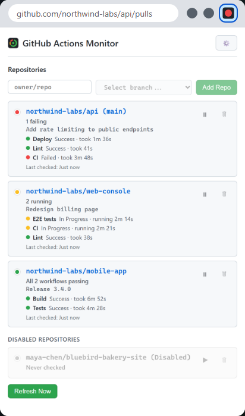

// Chrome extension
Your CI status, live in the toolbar
Know the moment a build breaks, without keeping a GitHub tab open. The toolbar icon turns green, yellow or red for all the repositories you care about. Click it for every workflow, live run timers and one-click links to the runs.

// At a glance
One icon for all your repositories
Green
Every workflow's latest run passed.
Yellow
Something is queued or running. Checks speed up to every 5 seconds until it finishes.
Red
Something failed. It flashes red and green when some repositories passed and others failed.
// Features
Made for real projects
Every workflow counts
The latest run of each workflow decides the status, so a failing CI is never hidden by a deploy that finished after it. Cancelled and skipped runs never raise false alarms.
Live run timers
Running workflows count up as they go; finished ones show how long they took. Click any workflow to open its run.
Rate-limit safe
When nothing changed, GitHub answers "not modified", which does not count against your API limit. The settings page shows live usage.
Branches and pausing
Watch all branches or a specific one, the same repository on several branches, and pause the ones you are not working on.
Alerts
Optional desktop notifications when a workflow starts, succeeds or fails. Click one to open the run.
Read-only and private
A read-only token is all it needs. It talks only to GitHub's API: no server, no analytics. Light and dark themes.
// Setup
About two minutes
- Open the settings page: right-click the toolbar icon and choose Options, or click ⚙️ in the popup.
- Create a read-only token. Click Create a read-only token on GitHub. GitHub's form opens with the name, a 90-day expiry and Actions: Read-only already set. Under Repository access choose All repositories (or the ones to monitor), then Generate token.
- Paste it and click Save Token. The extension checks it right away: account, token type, how many repositories it can see, remaining API requests.
- Add repositories. Click the toolbar icon, type an Owner (your username or an organization), pick the Repository from the list of all its repositories, pick a branch (or "All branches") and click Add Repo. Owners you use are remembered for next time.
For an organization's repositories, choose the organization as the token's Resource owner. Some organizations must approve fine-grained tokens before they work.
// Support
Getting help
The settings page's Test Token button answers most questions: it shows what your token can see and whether it works. Common ones:
| Symptom | What to do |
|---|---|
| "Bad token" | The token expired or was revoked. Settings, then Create a read-only token on GitHub and save the new one. |
| "Repo not found or no access" | Check the owner/repo spelling, and that the token's Repository access includes that repository. |
| Organization repositories missing | Create the token with the organization as Resource owner; the organization may need to approve it. |
| The icon stays gray | No token yet, no repositories added, or none has workflow runs. Click Refresh Now in the popup. |
| "Rate limited" | The popup shows when checking resumes. Pause repositories you are not working on; the settings page shows live usage. |
| No notifications | Check they are on in the settings page, and that Chrome is allowed to show notifications in your operating system's settings. |
Still stuck, found a bug, or have an idea? Get in touch. Mention your Chrome version and what the settings page shows.
// Privacy
Private by design
No server, no analytics, nothing sent to the developer. The extension talks only to GitHub's API with your own token, and keeps its data in your browser. Your token stays on your device unless you choose to sync it. Read the privacy policy.